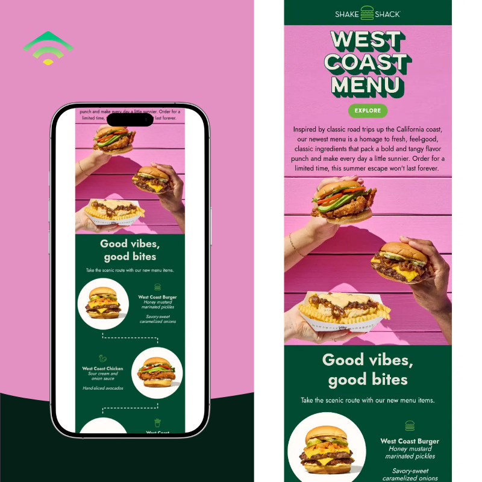
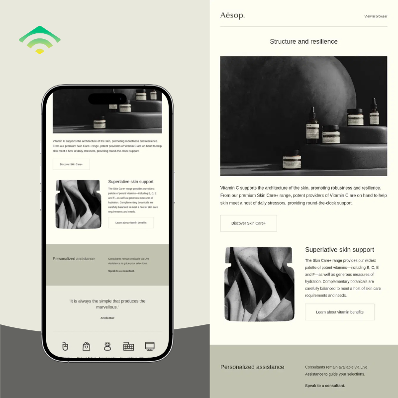
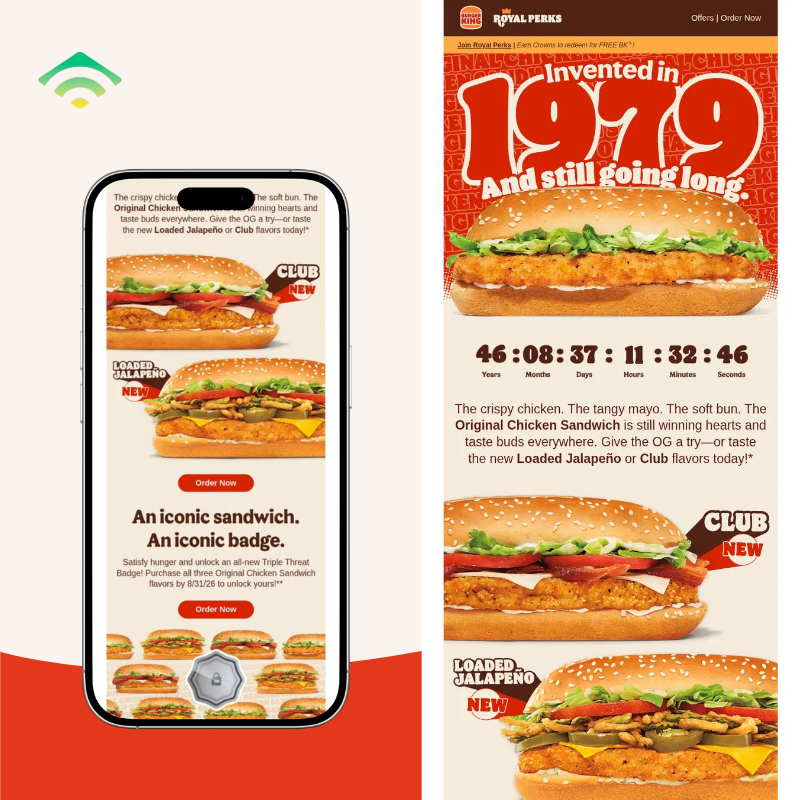
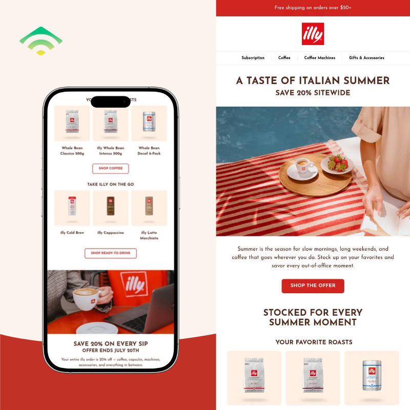
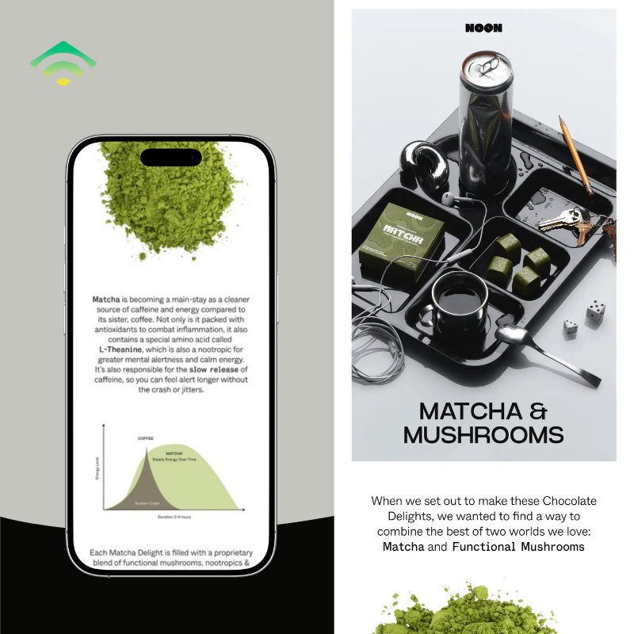
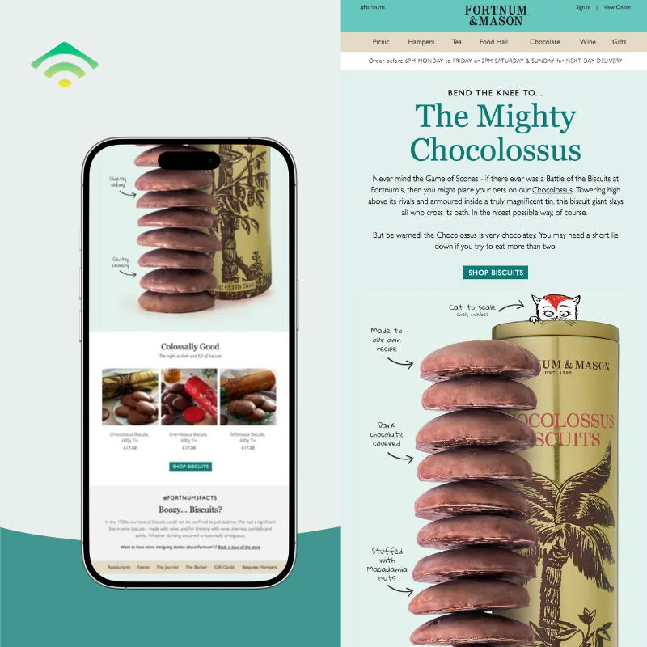
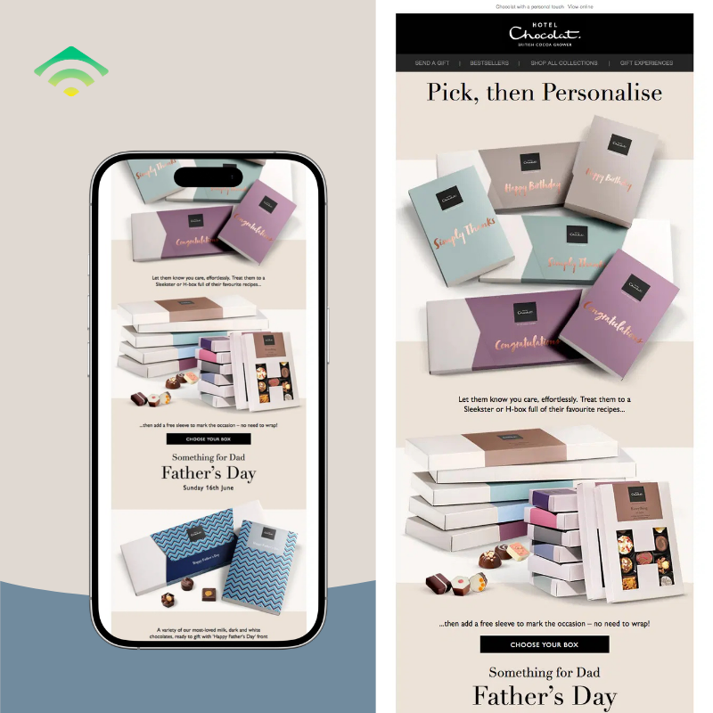
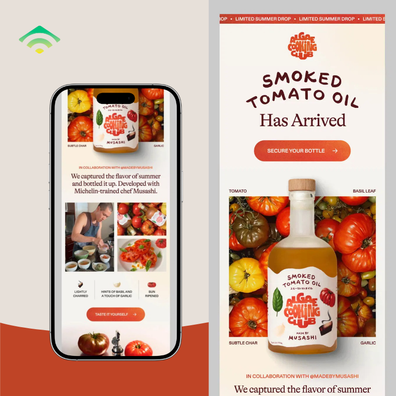

Food · Campaign concept
01West Coast Menu
Seasonal food campaign concept with bold colour, product imagery and responsive layouts.
I'm John Janet, a visual creative working across graphic design, digital campaigns and AI-assisted video concepts. I help brands communicate with thoughtful design, engaging imagery and purposeful storytelling.
01 — 08 / Independent campaign concepts

Seasonal food campaign concept with bold colour, product imagery and responsive layouts.

Minimal product storytelling with a restrained editorial visual direction.

Product-led promotional layout with confident typography and appetite appeal.

Warm seasonal storytelling and a clear offer-focused email layout.

Contemporary product composition with a clean, high-contrast presentation.

Playful product storytelling supported by illustrative annotations.

Gift-focused visual merchandising with a refined premium feel.

Expressive product launch concept with ingredient-led imagery.
I bring together visual design and emerging AI video workflows to create content that feels considered, useful and engaging. My current portfolio highlights campaign design concepts, with AI video projects developing as a growing part of my practice.
Promotional graphics, campaign layouts, email visuals and product-focused design for digital platforms.
Short-form product ads, visual storytelling, AI-generated scenes and social video concepts.
AI video is an expanding service area. New video samples will be added as finished projects are ready to showcase.
I'm John Janet, a creative professional interested in how design and visual storytelling help brands connect with people. I enjoy developing campaign concepts, shaping product presentations and exploring AI-assisted video as a new way to bring ideas to life. My approach balances creativity with clarity, so every visual has a reason to be there.
For design projects, visual content, collaborations or creative enquiries, I'd love to hear what you're working on.
johnjanetoluwatoyin@gmail.com